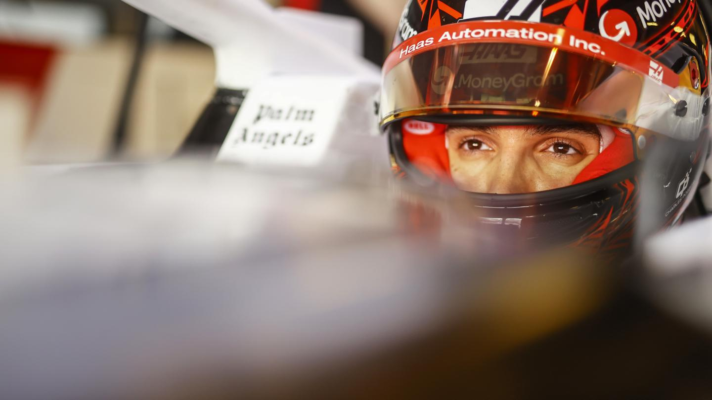

Esteban Ocon #31
Esteban Ocon becomes the first Formula 1 race winner to join MoneyGram Haas F1 Team as he begins a new chapter in his career for the 2025 FIA Formula 1 World Championship. Ocon began karting in 2004 in the French Minime Championship, before going on to win the series three times in 2007, 2008 and 2011. In 2008, he beat compatriots Anthoine Hubert and Pierre Gasly to the French Cadet Championship before spending three years in the KF3 series, winning in 2010, before finishing runner-up in the WSK Euro Series in 2011.
During the 2010 season, he was signed to the Lotus F1 Junior Development Program - which would help steer him into single-seaters on his path on the ladder to Formula 1. Following on from his success in karting, Ocon enjoyed a first taste of single-seaters in 2012 and 2013 in the Formula Renault Eurocup series. 2012 saw him take two podiums on his way to seventh overall in Formula Renault Alps, as he continued to make progress during his first season in single-seater racing.
Ocon would finish the 2013 Formula Renault 2.0 Eurocup in third overall, scoring two victories and a pole position. The Frenchman would take one race victory and two further podiums in a partial campaign in the Formula Renault 2.0 Northern European Cup. He made his mark in junior single-seater racing with a scintillating rookie year in the FIA European Formula 3 Championship, winning the championship ahead of an impressive field, which included current Formula 1 World Champion Max Verstappen. He took the title in style after taking nine victories, 15 pole positions and 21 podiums.
On the back of his title triumph, a Lotus junior at the time, he appeared in FP1 for Lotus F1 Team at the season finale in Abu Dhabi. In 2015, Ocon made the step to the GP3 Series on the Formula 1 support bill driving for ART Grand Prix. After a season-long battle with incredible consistency, he took the championship title as a rookie. A run of nine straight second-place finishes which started with the Silverstone Sprint Race and ended with the Sochi Sprint Race, was instrumental to his championship campaign.
Ocon’s GP3 title was followed by a full-time seat in the FIA Formula 2 Championship with ART Grand Prix in Ocon also joined the Mercedes-AMG Young Driver Program, capping off a fantastic season - as he set his sights on Formula 1. The year after he started the season as Renault Sport F1 Team’s Reserve Driver, taking part in four FP1 sessions. After starting the season racing in the DTM with Mercedes-AMG for ART Grand Prix, Esteban would later that year be handed his Formula 1 debut as a 19-year-old, when he replaced Manor Racing’s Rio Haryanto from the Belgian Grand Prix. Esteban finished the remainder of the season with Manor.